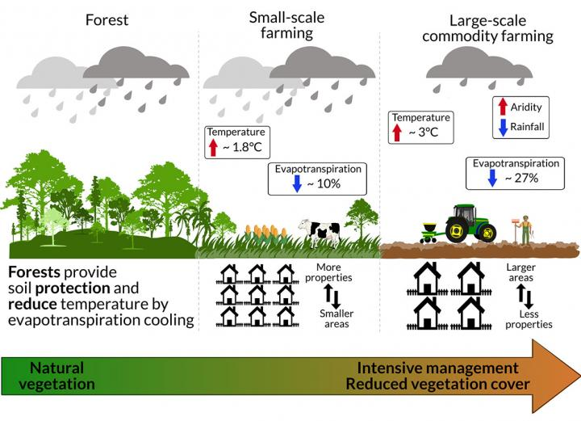
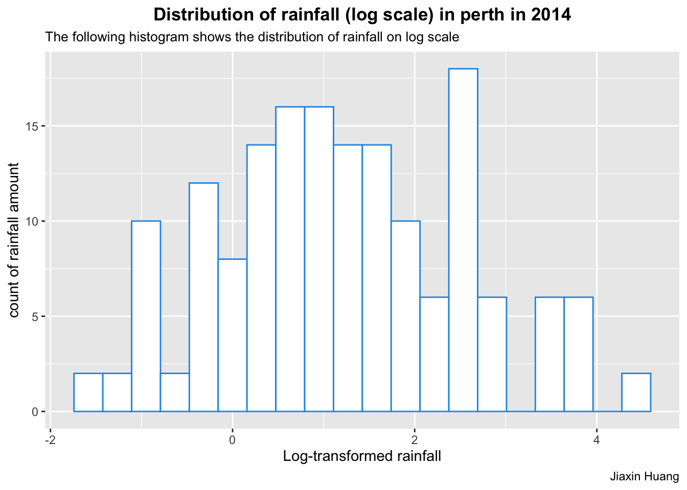

library(tidyverse)
library(tidytuesdayR)
library(here)
rainfall <- readr::read_csv('https://raw.githubusercontent.com/rfordatascience/tidytuesday/master/data/2020/2020-01-07/rainfall.csv')
temperature <- readr::read_csv('https://raw.githubusercontent.com/rfordatascience/tidytuesday/master/data/2020/2020-01-07/temperature.csv')Example Analysis
Exploring relationship between rainfall and temperature
Research Question
Rainfall and temperature are two important determining factors in agriculture production. However, factors like geographical region and interdependence between these two variables makes it hard to accurately model their relationship.(Cong and Brady 2012) Moreover, it is important to remind the mutual relationship between environmental factors (rainfall and temperature) and human activities (agricultural production). While environmental factors play a great role in determining crop production, modern agriculture also brings great impact to our ecosystem by accelerating climate change.(E. E. Maeda et al. 2021)

The goal of this analysis is to provide a basic idea of how to model the relationship between rainfall and temperature. Then zoom in to one city and study the distribution of rainfall for a given year. In order to properly address the question above, I’d like to split it into three parts:
1. make a line plot of the max and min temperature (y-axis) over time (x-axis).
2. plot the estimates of mean rainfall and the 95% confidence intervals on the same plot.
3. explore the distribution of rainfall (log scale) with histograms for a given city for a given year.
Target audience
- Any environmental specialists who are interested in exploring the relationship between temperature and rainfall, and use the relationship to predict possible health impacts on the population.
- Farmers who want to make plans for their crop production and develop risk reducing strategies.
Methods
Load original data
The two datasets I will be using come from TidyTuesday. Specifically, I will use data that comes from January 2020.
Here are the links to the original datasets: rainfall and temperature
Data dictionary
If you want to find out what the column names represent, here is the link to the data dictionary: https://github.com/rfordatascience/tidytuesday/blob/master/data/2020/2020-01-07/readme.md#data-dictionary (jthomasmock 2020)
Data analysis
Research Question 1
In order to answer the first question, we need to first join the two datasets together:
rainfall_wrangled <- rainfall %>%
na.omit(rainfall) %>%
unite("date", c("year", "month", "day"), sep = "-", remove = FALSE) %>%
mutate(date = ymd(date)) %>%
select(-month, -day) %>%
mutate(city_name = str_to_upper(city_name))
combined_data <- inner_join(x = rainfall_wrangled, y = temperature, by=c('date', 'city_name'), relationship = "many-to-many")
glimpse(head(combined_data))Rows: 6
Columns: 13
$ station_code <chr> "009151", "009151", "009151", "009151", "009151", "009151"
$ city_name <chr> "PERTH", "PERTH", "PERTH", "PERTH", "PERTH", "PERTH"
$ date <date> 1967-07-05, 1967-07-05, 1967-07-06, 1967-07-06, 1967-07-0…
$ year <dbl> 1967, 1967, 1967, 1967, 1967, 1967
$ rainfall <dbl> 2.8, 2.8, 4.8, 4.8, 5.8, 5.8
$ period <dbl> 1, 1, 1, 1, 1, 1
$ quality <chr> "Y", "Y", "Y", "Y", "Y", "Y"
$ lat <dbl> -31.96, -31.96, -31.96, -31.96, -31.96, -31.96
$ long <dbl> 115.79, 115.79, 115.79, 115.79, 115.79, 115.79
$ station_name <chr> "Subiaco Wastewater Treatment Plant", "Subiaco Wastewater…
$ temperature <dbl> 17.8, 8.7, 18.4, 8.0, 17.2, 10.5
$ temp_type <chr> "max", "min", "max", "min", "max", "min"
$ site_name <chr> "PERTH AIRPORT", "PERTH AIRPORT", "PERTH AIRPORT", "PERT…# plot 1 using geom_line and facet_wrap
combined_data %>%
filter(year >= 2014) %>%
ggplot(aes(x = date, y = temperature, colour = temp_type)) +
geom_line() +
facet_wrap(vars(city_name), ncol = 2) +
labs(title = "Max and min temperature over time for each city since 2014",
subtitle = "Max and min termperature fluctuate simultaneously and regularly during the year.",
x = "Date", y = "Min and Max temperature",
caption = "Jiaxin Huang") +
theme(plot.title = element_text(hjust = 0.5, face = "bold"),
plot.subtitle=element_text(size = 10),
axis.text.x = element_text(angle = 45, hjust = 1, vjust = 1))
Research Question 2
# plot 2 using geom_point and geom_errorbar and facet_warp
calculate_CI <- function(x, conf) {
alpha <- 1 - conf
degrees_freedom <- length(x) - 1
t_score <- qt(p = alpha / 2, df = degrees_freedom, lower.tail = FALSE)
sample_sd_err <- sd(x)/sqrt(length(x))
lower_bound <- mean(x) - t_score * sample_sd_err
upper_bound <- mean(x) + t_score * sample_sd_err
output_value <- c(lower_bound, upper_bound)
output_name <- c("lower_bound", "upper_bound")
output <- setNames(output_value, output_name)
return(output)
}
rain_df <- combined_data %>%
filter(year >= 2014) %>%
group_by(year, city_name) %>%
summarize(sample_mean = mean(rainfall),
sample_sd = sd(rainfall),
lower_bound = calculate_CI(rainfall, 0.95)["lower_bound"],
upper_bound = calculate_CI(rainfall, 0.95)["upper_bound"])`summarise()` has grouped output by 'year'. You can override using the
`.groups` argument.rain_df %>%
ggplot(aes(x = year, y = sample_mean, colour = "pink")) +
geom_point(size = 2) +
geom_line(colour = "black") +
geom_errorbar(aes(ymin = lower_bound, ymax = upper_bound)) +
facet_wrap(vars(city_name)) +
labs(title = "Mean and 95% CI for rainfall over time for each city",
subtitle = "Canberra and Sydney have the lowest amount of rainfall, while the rest have relatively more rainfall.\nThe amount of rainfall tends to decrease as time goes by.",
x = "Year", y = "Amount of rainfall",
caption = "Jiaxin Huang") +
theme(plot.title = element_text(hjust = 0.5, face = "bold"),
plot.subtitle=element_text(size = 10),
axis.text.x = element_text(angle = 45, hjust = 1, vjust = 1))
Research Question 3
Tip
Use the wrangled data from research question 1.
# plot 3 using geom_histogram
rainfall_histogram <- function(input_city, input_year){
# first, check if the input city and year exist in the dataset
if (any(combined_data$city_name == input_city & combined_data$year == input_year)) {
# if exists, generate histogram for the choosen city and year
combined_data %>%
filter(city_name == input_city, year == input_year) %>%
ggplot(aes(log(rainfall))) +
geom_histogram(colour = 4, fill = "white", bins = 20) +
labs(title = paste("Distribution of rainfall (log scale) in", str_to_lower(input_city), "in", input_year),
subtitle = "The following histogram shows the distribution of rainfall on log scale",
x = "Log-transformed rainfall",
y = "count of rainfall amount",
caption = "Jiaxin Huang") +
theme(plot.title = element_text(hjust = 0.5, face = "bold"),
plot.subtitle=element_text(size = 10))
} else {
# if data does not exist, print error messages
stop("Your input does not exist in the dataset")
}
}# Example: distribution of rainfall in Perth in 2014
rainfall_histogram("PERTH", 2014)
Summary of functions used
Functions used from tidyr: unite(), mutate(), select(), inner_join(), glimpse(), filter(), group_by(), summarize().
Functions used from ggplot2: geom_line(), geom_point(), geom_error_bar(), geom_histogram, facet_wrap()
Findings
Canberra and Sydney have greatest variation in temperature over time, and they also have lowest amount of rainfall. In addition, Perth and Melbourne has least variation in temperature, and they also have greatest amount of rainfall. Thus, temperature and rainfall seems to be negatively correlated with each other in these two locations.
Warning
The relationship is NOT causal.
Note
Considering that the relationship between rainfall and temperature is affected by multiple factors, it is inappropriate to view this conclusion as a global trend.
References
Cong, Rong-Gang, and Mark Brady. 2012. “The Interdependence Between Rainfall and Temperature: Copula Analyses.” The Scientific World Journal 2012: 1–11. https://doi.org/10.1100/2012/405675.
jthomasmock. 2020. “Data Dictionary.” GitHub. https://github.com/rfordatascience/tidytuesday/blob/master/data/2020/2020-01-07/readme.md#data-dictionary.
Maeda, Eduardo. 2021. “Large-Scale Commodity Farming Accelerating Climate Change in the Amazon Rainforest.” University of Helsinki. https://www.helsinki.fi/en/news/mathematics-and-science/large-scale-commodity-farming-accelerating-climate-change-amazon-rainforest.
Maeda, Eduardo Eiji, Temesgen Alemayehu Abera, Mika Siljander, Luiz E. O. C. Aragão, Yhasmin Mendes de Moura, and Janne Heiskanen. 2021. “Large-Scale Commodity Agriculture Exacerbates the Climatic Impacts of Amazonian Deforestation.” Proceedings of the National Academy of Sciences 118 (7). https://doi.org/10.1073/pnas.2023787118.